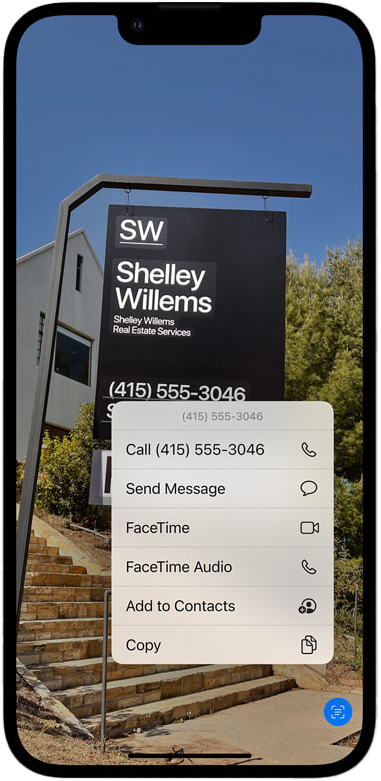
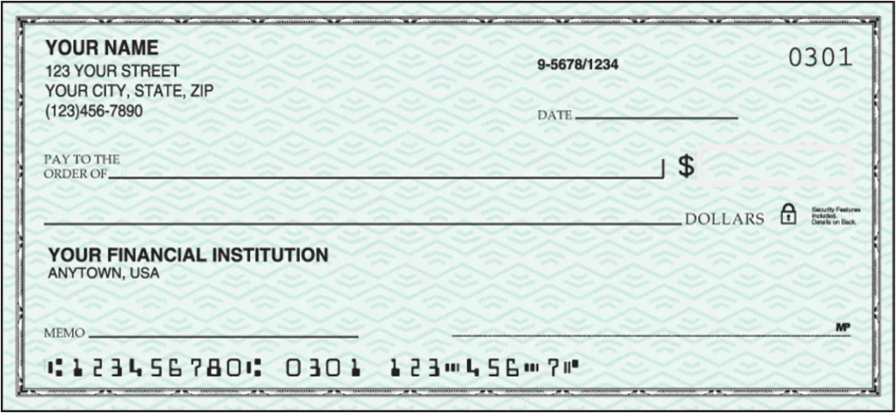
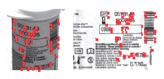
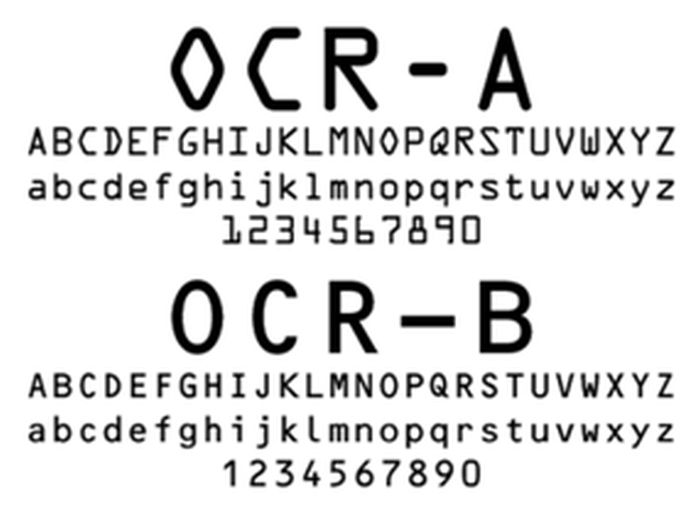

What is OCR?
Optical character recognition, or OCR, are technologies to convert images of text into digitized text data. OCR programs extract text from scanned documents, scene photos, screenshots and image-only pdfs so that the text data can be archived, edited, searched and translated.
OCR technologies are quite beneficial to us. Resources like old printed books, newspapers and historical records are being digitized into PDFs. We can choose to take notes with our hands and ink, and have OCR convert our handwritings into digitized text. We can translate foreign text on product ingredient labels just by pointing our cell phone cameras at them.

OCR by Element AI
Why Anti-OCR?
While OCR technologies liberate us from manual labor, its ability to access and process large scale image data is very helpful for systems of surveillance. In the past, text in images have this natural barrier from the rest of the digital world as being isolated, non-searchable, and off-the-record, with the only intended audience being real human eyes. Now, web based communications would never be deemed secure to us, since OCR technologies has broken the barrier of text and image.
For example, iOS 15’s newest feature, Live Text, could detect and extract text in photos within your camera roll so that you can copy, save, and translate with ease. Certain social media apps also use keyword detection to filter out and censor images containing unwanted text content.
With our means of communication becoming more and more transparent under the eyes of machines, programs and algorithms, I want to excavate some safe spaces just between humans. Through visual design and typography, we might be able to develop ways of text representation that are unrecognizable through OCR systems, but recognizable by humans. Here, I want to explore some methods and directions for Anti-OCR Typography.

Live Text in iOS 15
How does OCR work?
<1> Image Pre-Processing
Before actually doing text recognition, OCR softwares usually perform image pre-processing to “clean up the image” and increase the chances of recognition. Techniques include:
1. De-skew
This process transforms warped, skewed and angled text and text blocks back to its upright position. De-skewing techniques are especially powerful in scene-photo text detections by softwares like Google Lens.
2. Despeckle
Removes positive and negative spots, smoothing edges, clearing up noise.
3. Binarization
Convert an image to black-and-white. Since most documents are black text on white backgrounds, image binarization is an easy way to distinguish text from background. Most PDF readers only recognize text with binary contrast, but more advance OCR softwares like Google Lens detects text by checking multiple color dimensions.
4. Line removal
Cleans up non-glyph boxes and lines.
5. Layout analysis or “zoning”
Identifies columns, paragraphs, captions, etc., as blocks. Particularly useful in multi-column layouts and tables.
6. Resizing image
OCR softwares are trained starting from smaller image sizes, so their recognition accuracies are higher in smaller pixel sizes.
7. Edge Detection
Complex lighting conditions require more complicated techniques in image pre-processing. Those techniques usually start with edge detections.
Complex Image Pre-Processing Techniques
<2> Orientation and Script Detection
Then, after image manipulations are done, OCR softwares perform Orientation and Script Detection (OSD) to identity script, establish word and character shapes baseline, segmentate or divides words when required.
<3> Pattern Recognition
Pattern recognition is used when the OCR program is fed examples of text in various fonts and formats to compare and recognize characters in the scanned document or image file.
Early OCR techniques utilize custom designed typefaces such as OCR-A, OCR-B, and MICR-E. These typefaces are specifically designed to boost text recognition accuracy and used on important documents such as passports, IDs, credit cards and cheques.
Later, researches gathered huge datasets of text recognition data, included print fonts and hand written texts. The MNIST database of is an example.
MICR-E numbers on cheque
<4> Feature Detection
Feature detection occurs when the OCR applies rules regarding the features of a specific letter or number to recognize characters in the scanned document. Features include the number of angled lines, crossed lines or curves in a character. For example, the capital letter “A” is stored as two diagonal lines that meet with a horizontal line across the middle. When a character is identified, it is converted into an ASCII code (American Standard Code for Information Interchange) that computer systems use to handle further manipulations.

Warp and Skew Correction

Orientation Detection

OCR-A and OCR-B font

MICR-E font